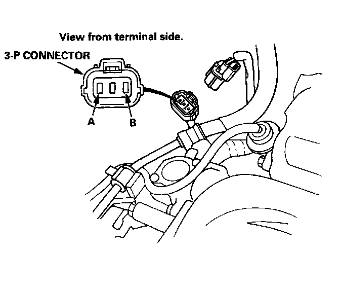

Gear Lockout Solenoid: Testing and Inspection

1. Disconnect the 3-P connector of the reverse lockout solenoid sub-harness.
2. Measure the resistance between terminals A and B in the reverse lockout solenoid sub-harness.
STANDARD: 9.0-13.6 ohms